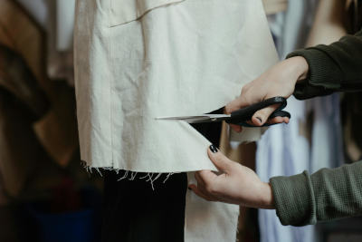
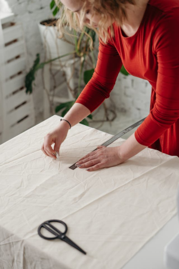

Ajuste e Conserto
Algumas peças carregam mais do que tecido e costura — carregam lembranças, estilo e significado. Dê a elas um novo ajuste e continue vivendo bons momentos com o que você ama vestir.

Mais do que consertar roupas, nós ajudamos a preservar aquilo que faz você se sentir bem. Porque uma peça amada merece continuar fazendo parte da sua vida.
Costura sob Medida
Quando a roupa é feita sob medida, ela não veste apenas o corpo — ela abraça sua história, seu estilo e sua confiança.

Transformamos tecido em algo especial: uma roupa criada com cuidado, personalidade e o caimento que você merece.